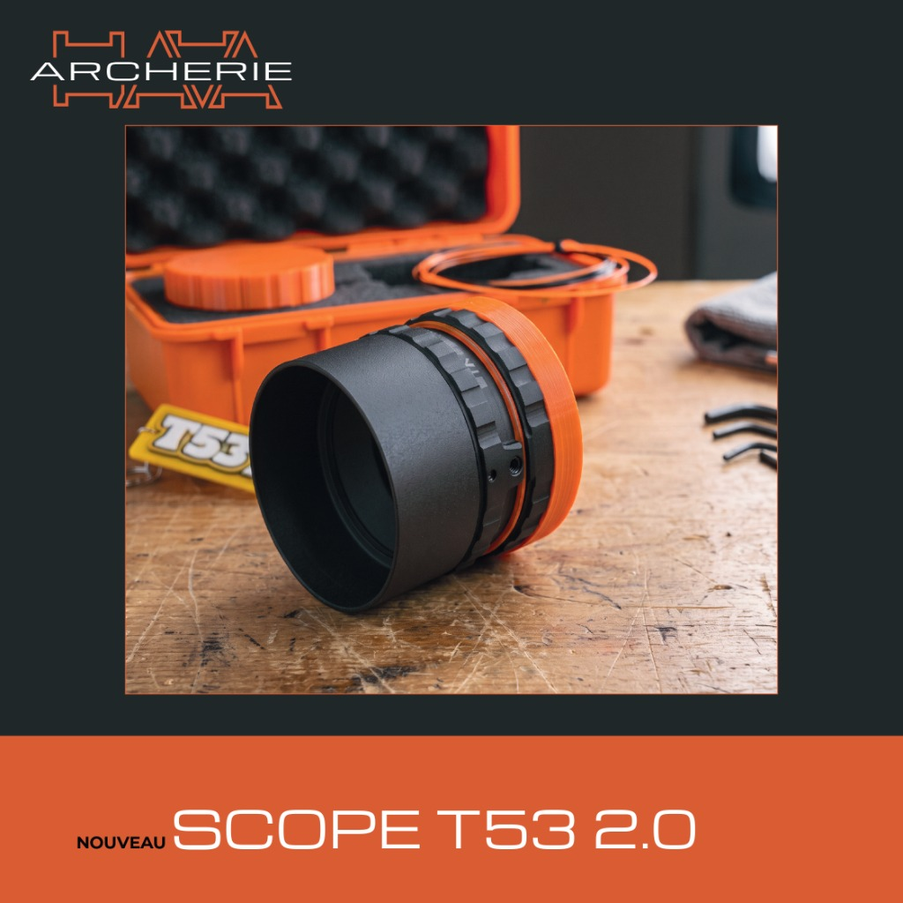
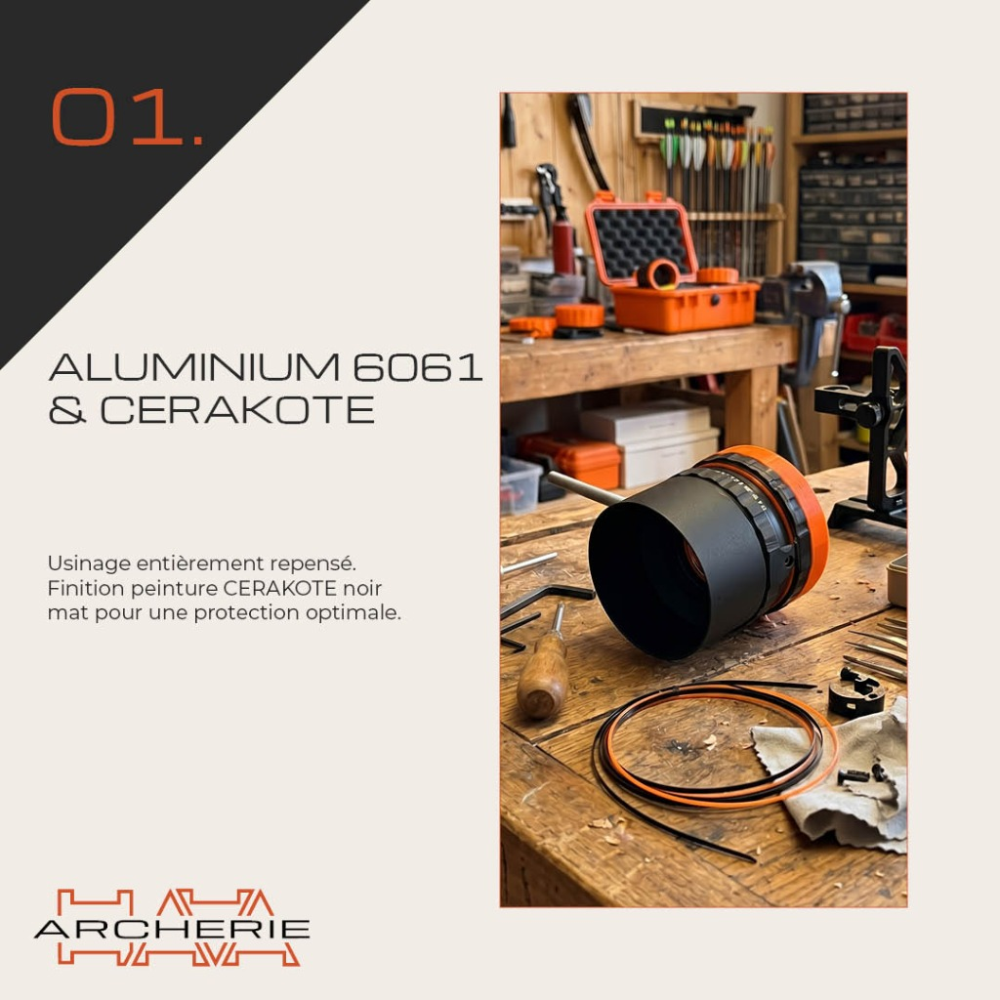
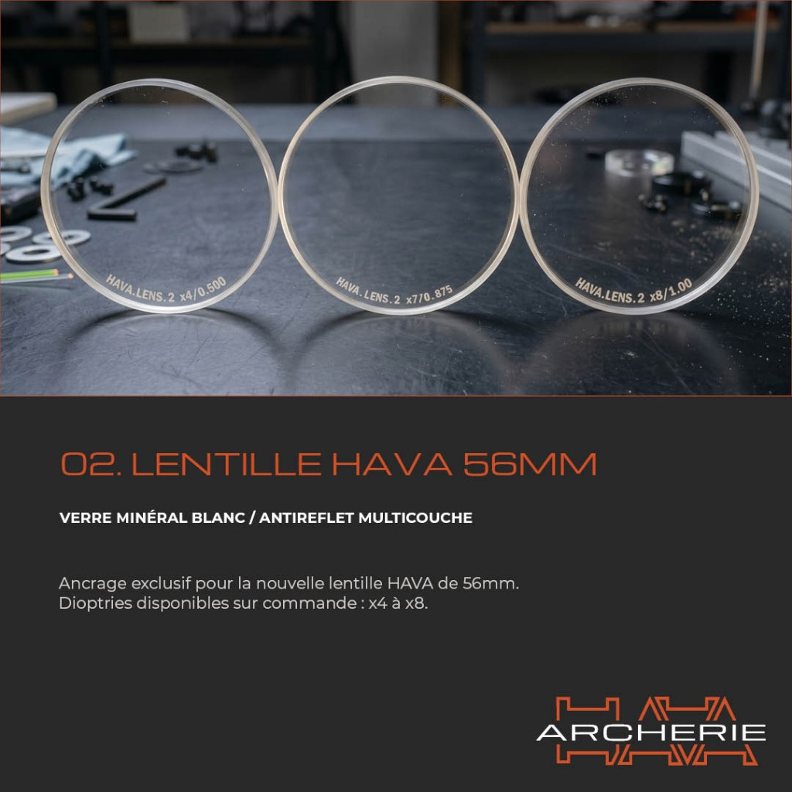
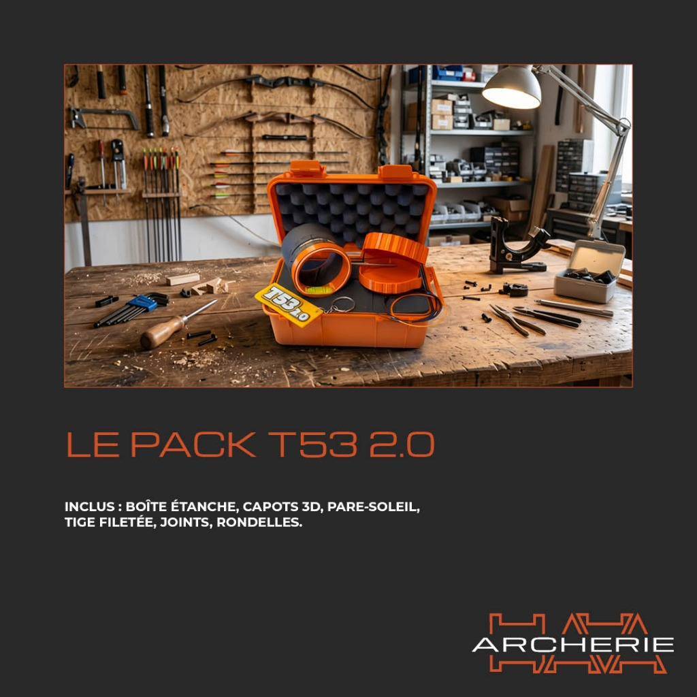
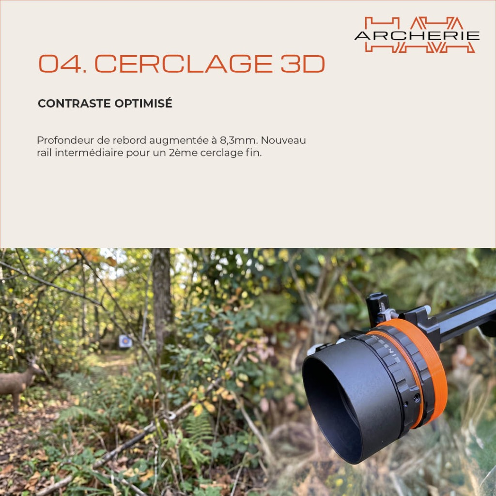

← Retour au Dossier 03 · Identités & Chartes

BRANDING & PRODUITS
PROJET PERSONNEL
OPTIQUE TIR À L'ARC
Hava Archerie
Refonte graphique de l'identité de marque d'une enseigne spécialisée en tir à l'arc : modernisation du logotype, planche de déclinaisons et création des visuels produits pour le lancement du Scope T53 2.0.
Direction Artistique & Codes Industriels
Palette Cerakote & Géométrie Technique
Pour accompagner la montée en gamme d'Hava Archerie et le lancement du Scope T53 2.0 (usiné en aluminium 6061 en France), l'identité visuelle associe l'Orange Cerakote (#D95B26) emblématique du logo aux gris mats anodisés des pièces mécaniques.
Signature Marque
Orange Cerakote
#D95B26
RVB : 217, 91, 38
Usage : Logotype HAVA, cerclage optique, bandeaux titres & flèches de cotation.
Usage : Logotype HAVA, cerclage optique, bandeaux titres & flèches de cotation.
Fond & Corps Alu
Noir Carbone Anodisé
#1E2224
RVB : 30, 34, 36
Usage : Fonds des fiches techniques Scope T53 2.0 et contraste industriel.
Usage : Fonds des fiches techniques Scope T53 2.0 et contraste industriel.
Surfaces Techniques
Gris Acier 6061
#2C3235
RVB : 44, 50, 53
Usage : Dégradés radiaux derrière les rendus 3D du scope et encadrés.
Usage : Dégradés radiaux derrière les rendus 3D du scope et encadrés.
Fond Clair
Sable / Pierre Mate
#F2ECE6
RVB : 242, 236, 230
Usage : Support clair pour la papeterie et présentation du logotype principal.
Usage : Support clair pour la papeterie et présentation du logotype principal.
01 · Évolution de l'identité

AVANT — L'ancien logo de l'enseigne
APRÈS — Le nouveau logotype épuré et technique (#D95B26 & #1E2224)

Planche de recherches et déclinaisons chromatiques (fonds clairs, fonds sombres et formats compacts)
Avant / Après & Planche de déclinaisons
02 · Communication produit
Couverture produit — Nouveau Scope T53 2.0 01 — Aluminium 6061 & revêtement Cerakote 02 — Optique de précision : Lentille Hava 56 mm 03 — Présentation complète du Pack T53 2.0 04 — Focus technique : Cerclage 3D
Lancement du Scope T53 2.0 (cliquez pour agrandir)
Série de 5 visuels techniques réalisés pour présenter l'usinage en aluminium 6061, le traitement Cerakote et la lentille 56 mm.




